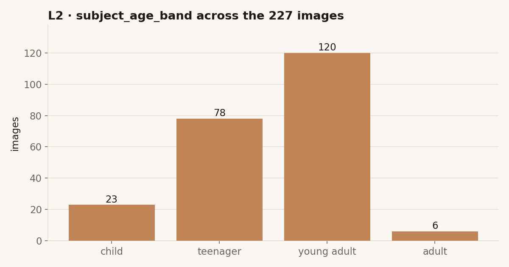
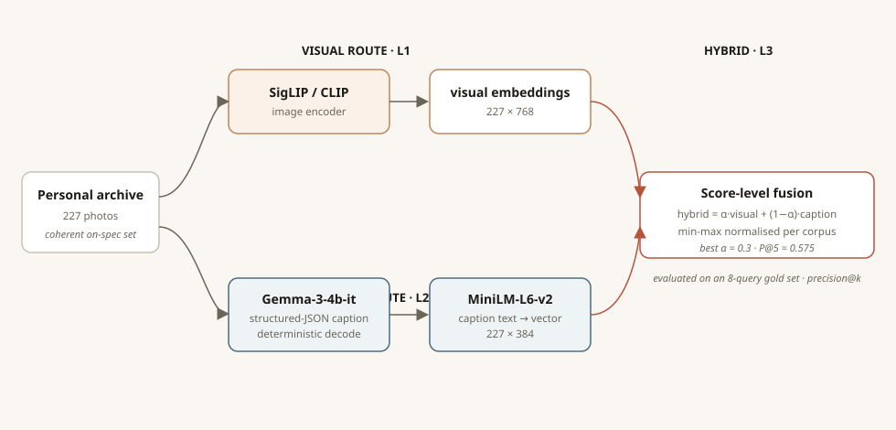
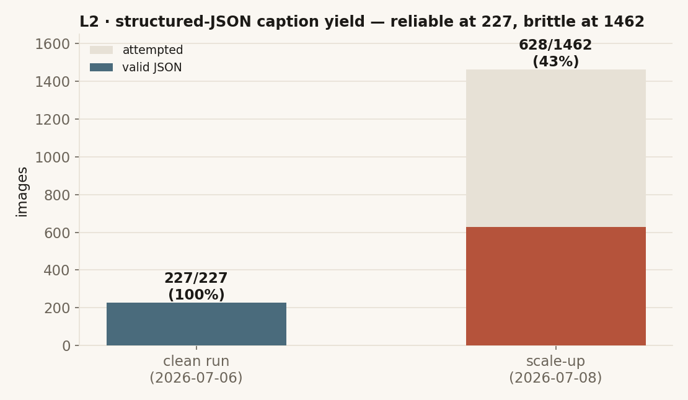
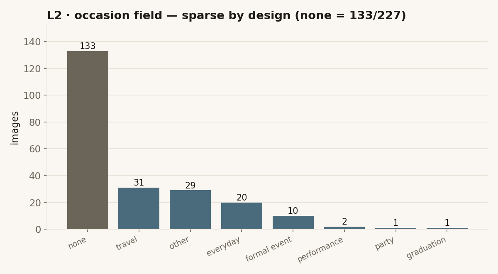
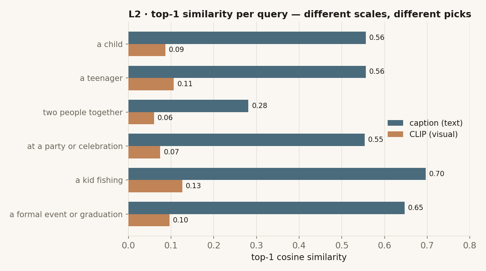
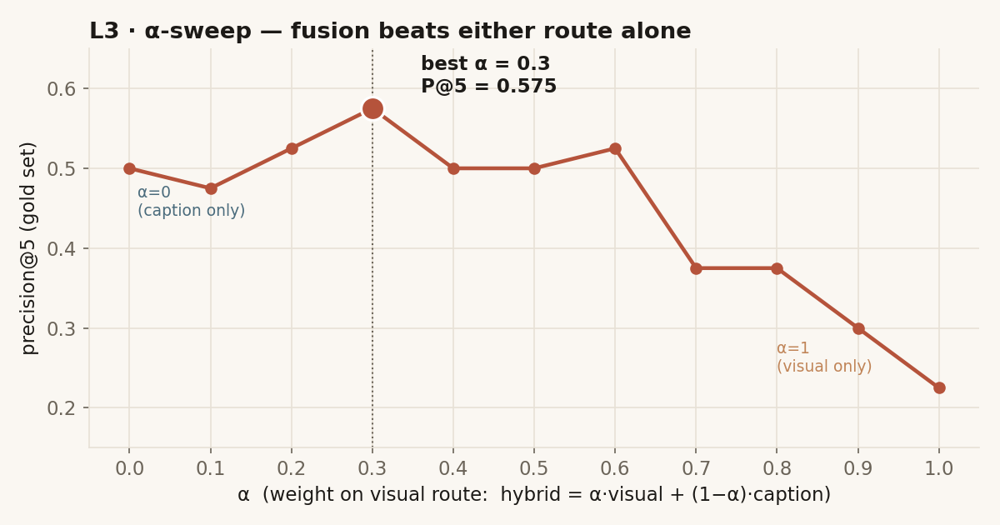
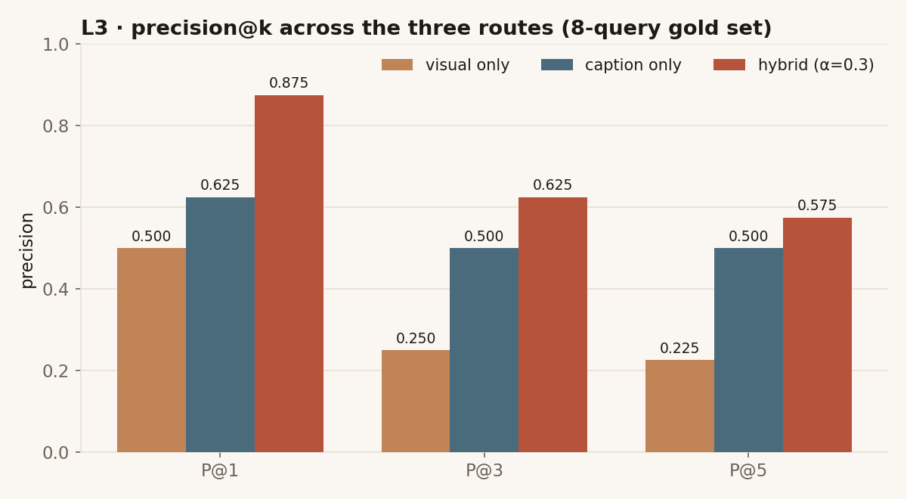
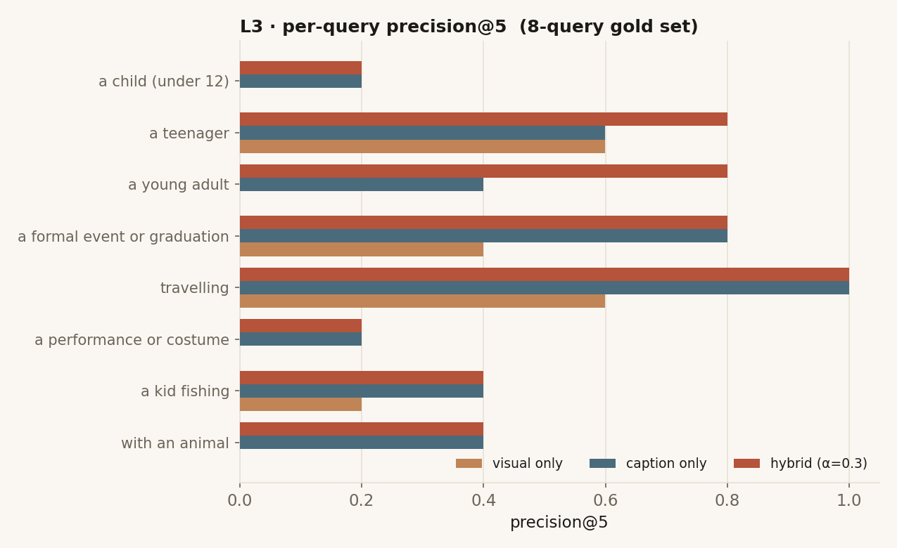

This project asks one question of a personal photo archive in three escalating ways. L1 — The Finder builds a purely visual retrieval system and stress-tests exactly what it can and cannot see. L2 — The Companion adds a second, semantic route — it teaches a model to describe each photo, then retrieves over the descriptions — and puts the two ways of seeing head-to-head. L3 — The Critic fuses them into a single weighted score, grounds its answers in the retrieved images themselves, and measures all three routes against a gold set. The arc: seeing, then reading, then judging.
How to read this document
- The Finder — a SigLIP visual-similarity engine over the archive, with a 15-query retrieval atlas that maps where contrastive vision-language embeddings succeed and fail.
- The Companion — structured-JSON captioning with Gemma, a second retrieval route over the caption text, and a six-query comparison against the L1 visual baseline.
- The Critic — α-weighted hybrid fusion of the two routes, true multimodal answering, and a precision@k evaluation across all three routes on an 8-query gold set.
What can a machine retrieve from a life when all it has are the pixels?
Abstract
L1 establishes the baseline. Every image in a personal archive of roughly 195 photographs (1999–2023) is embedded once with SigLIP, a contrastive vision-language model, into a shared 768-dimensional image–text space. A typed query is embedded into the same space and matched by cosine similarity. The deliverable is not just the engine but a retrieval atlas: fifteen queries, each with its top-5 results, similarity scores, and a mechanistic reading of why the model returned what it did. The atlas is what turns a demo into a diagnosis — it shows that the model reliably encodes concrete scenes and activities, and reliably fails at identity, age, counting and relation. Those failures are the specification for L2.
Corpus
A visual autobiography, chosen because I know every frame
The corpus is ~195 personal photographs spanning 1999–2023 — childhood to the present: candid and posed portraits, outdoor activities, travel (an Amazon reserve, San Francisco, Houston), a sculpture project series, restaurant visits, events, and costume/performance photos. It was curated down from a larger collection by removing standalone artwork and illustrations, to keep it exclusively photographs. The reason is methodological: because I know who is in every image, where and when it was taken, and what was happening, a machine's mis-seeing is immediately obvious in a way it never is with unfamiliar stock images.
Pipeline
One model, embedded once, retrieved on CPU
Model. SigLIP (siglip-base-patch16-224) — a contrastive model that projects images
and text into one shared 768-d space.
Embedding. Each image is resized to 224×224, passed through SigLIP's vision transformer, and projected into the shared space. Every vector is L2-normalised, so a dot product between any two equals their cosine similarity. Embeddings are computed once on a T4 GPU (batch size 16) and cached to a pickle file; all subsequent retrieval runs on CPU.
Retrieval. A text query is encoded through SigLIP's text tower into the same space, cosine similarity is computed against every cached image embedding, results are ranked, and an adjustable similarity threshold (default 0.08) filters weak matches. A Gradio interface wraps it with a text box, a top-k slider, and a threshold slider.
The retrieval atlas — 15 queries
The atlas is the heart of L1: fifteen queries across four categories, each with its top-5 results, similarity scores, and a mechanistic explanation. Grouped by outcome below.
Successes
| Query | top score | Why it works |
|---|---|---|
a kid fishing | 0.1265 | Highest score in the atlas. Concrete and compositional — child + rod + water has a strong visual signature. A large score cliff to rank 2 (→0.0889) confirms one confident match. |
riding a bicycle | 0.0998 | Most dramatic cliff (54% drop to rank 2). Exactly one image shows a bicycle; SigLIP found it confidently. |
a teenager | 0.1064 | Three of five results from Sept 2013 (age ~16). Casual clothing and posture match SigLIP's learned "teenager" representation. |
wearing a costume | 0.1058 | Halloween image at rank 3; sculpture-project images also surface — non-standard clothing reads as "costume." Correct, for the wrong reason. |
a formal event or graduation | 0.0961 | Retrieves a formal celebration and a graduation. Despite filenames suggesting otherwise, the visual content is right. |
by the water or at a beach | 0.0942 | San Francisco beach confirmed at rank 3, good date diversity. Water/beach has concrete signatures (blue tones, sand, open sky). |
outdoors in nature | 0.0909 | SFO April 2019 images dominate (4 of 5). Correct outdoor/nature sense, but reveals near-duplicate saturation. |
a painting or drawing | 0.0843 | In a photo-only corpus, SigLIP still detects paintings/drawings visible within photos — local feature encoding at work. |
Partial successes
| Query | top score | What went wrong |
|---|---|---|
a young adult | 0.0990 | Heavy overlap with "teenager" (same 2013 images); score gap only 0.007. SigLIP cannot sharply separate adjacent age ranges. |
a formal portrait | 0.0907 | Sculpture-project images rank top for clean composition, not formal attire. "Mateo de gala" (literally "formal Mateo") never appears — SigLIP sees pixels, not metadata. |
a child | 0.0868 | The chronologically correct childhood photo lands only at rank 5; sushi-restaurant images (age ~20) intrude because the scene composition reads as "child context." SigLIP encodes scenes, not facial age. |
at a party or celebration | 0.0746 | 20th birthday correct at rank 1, but low scores overall — "party" is an abstract social concept with variable visual form. |
a dog or cat | 0.0672 | Rank 1 is a hyena costume (Lion King musical) — animal-like features trigger the match. Real cat photos appear at ranks 2–4. |
food or restaurant | 0.0572 | Saltgrass Houston correct at rank 3, but very low scores. Close-framed sushi images don't read as "restaurant." |
Failure
| Query | top score | Why it fails |
|---|---|---|
two people together | 0.0598 | Lowest top score in the atlas. Contrastive models encode a bag of features, not structured relations — "two" requires binding a quantity to objects, a known CLIP/SigLIP limitation (Winoground). |
Score distribution & threshold
Because the corpus is homogeneous, top-k always returns something — so the real signal is score magnitude, not rank position. Comparing the full-corpus score distribution for strong vs. weak queries makes the difference visible:
| Query type | mean | std | min | max |
|---|---|---|---|---|
Strong — a kid fishing | 0.0075 | 0.0325 | −0.0658 | 0.1265 |
Mid — a formal event or graduation | 0.0145 | 0.0294 | −0.0330 | 0.0961 |
Weak — two people together | 0.0187 | 0.0182 | −0.0279 | 0.0598 |
Strong queries show a high max with a low mean and wide spread — one clear match against an otherwise irrelevant corpus. Weak queries show a high mean relative to their max and a narrow spread — no clear match, just a flat field of vaguely relevant scenes.
What L1 established
- Score thresholds matter more than rank. With a homogeneous corpus, top-k always returns something; the signal is score magnitude, not position.
- Photo bursts saturate results. The SFO series (12 photos) and the sculpture project (18) dominate multiple queries because near-duplicates cluster in embedding space — a diversity mechanism (e.g. maximal marginal relevance) would help.
- SigLIP encodes scenes, not identities or ages. It cannot track one person aging across photos; "a child" and "a teenager" retrieve on composition, clothing and image quality, not facial age. This is the single biggest opening for a caption layer.
- Concrete beats abstract. "A kid fishing" (0.1265) and "riding a bicycle" (0.0998) beat "at a party" (0.0746) and "two people together" (0.0598). Distinctive activities embed well; formless social concepts embed poorly.
- Counting and spatial relations fail. "Two people together" is the weakest query — the model encodes an unstructured bag of features, not relational structure.
- SigLIP sees pixels, not metadata. Descriptive filenames ("Mateo de gala", "Choo Choo Sushi") are never retrieved by matching queries unless the visual features actually match.
Limitations → the brief for L2
Each L1 limitation is a direct requirement handed to The Companion:
- No identity or temporal awareness → L2 asks a VLM to explicitly estimate a
subject_age_bandand name companions in a structured caption. - Compressed score range / hard thresholding → L2 retrieves over caption text embeddings, whose similarities spread across a much wider, more legible range.
- No compositional / relational reasoning → L2 tests whether describing a scene in words recovers relations the contrastive embedding drops (spoiler: counting still fails).
- Near-duplicate saturation and scene-over-semantics bias → motivate a second, independent route so the two can be compared, and eventually fused, in L3.
If the machine writes down what it sees, can it find the photo you actually meant?
L2 takes L1's core failure — SigLIP sees scenes, not meaning — and answers it directly. It asks a deceptively simple question of the same archive: when you type “a kid fishing”, what should the machine look at — the picture, or a description of the picture? To answer it I built two independent retrieval routes over the same 227 images and put them head-to-head. The routes disagree, and the way they disagree is the whole point.
Abstract
Every image in the corpus is indexed twice. The visual route embeds raw pixels with a CLIP-family image encoder (227×768) — the L1 approach, carried forward as a baseline. The semantic route first asks a vision-language model (Gemma-3-4b-it) to write a structured caption for each photo, then embeds that text with a sentence encoder (MiniLM, 227×384). A query is run through both, and the top matches are compared. The finding: on abstract, human queries about age, occasion and activity, the caption route returns far stronger and more meaningful matches than raw CLIP — but the two routes surface genuinely different images, so neither is sufficient alone. That tension is exactly what motivates the hybrid fusion built in L3.
Motivation & corpus
Why a personal archive, and why 227
The corpus is my own life in photographs — a stress test for retrieval, because the queries a person actually asks (“teenager”, “a formal event”, “travelling”) are semantic and fuzzy, not object labels. After diagnosing cache drift in an earlier pass, the corpus was deliberately fixed at the 227 images for which captions, CLIP vectors and text vectors all agree on an identical filename set with zero stubs. 227 is on-spec (≤300) and, crucially, coherent: every downstream number describes the same photographs. (The slightly larger figure than L1's working set reflects re-including images once the caches were reconciled.)

subject_age_band for every image, giving age its own clean retrieval signal
(age is read from filename years, so unlike the semantic fields it is not self-referential).Approach
One archive, two encoders
The pipeline forks immediately after the source and only rejoins at the comparison step, so each route can be judged on its own terms. In L3 the two branches rejoin a second time — this diagram already shows that hybrid stage on the right.

Captions are not free text — Gemma is prompted for a structured JSON schema
(one_line, subject_age_band, subject_activity,
companions, setting, occasion, objects,
searchable_text) and decoded deterministically (do_sample=False) so
the run is reproducible. The searchable_text field is what the semantic route actually
embeds.
Development — the caption saga
Getting to a clean 227 was not linear, and the dev log keeps the scars. Early runs captioned
zero images (a silent parse bug: 0/0). The clean run on 2026-07-06 finally hit
227/227 valid JSON. A later attempt to scale to the full 1462-image dump collapsed to
628/1462 usable — roughly 43% of that run parsed. That polluted run is kept as
captions_1462_backup.json in the L2 history, not deleted: it is the evidence behind the
decision to stay on the coherent 227.

occasion as “none” for 133 of 227
images rather than inventing a celebration. Good for precision, but it means the occasion
signal is sparse — a real constraint on any occasion-based query.

occasion field. “none” dominates (133/227); “travel”,
“other” and “everyday” carry most of the remaining signal; “party”, “graduation” and “performance”
are near-singletons.Findings
The routes live on different scales — and see different things
Across all six probe queries the caption route returns dramatically higher cosine similarities than raw CLIP. This is partly a scale artefact (the two embedding spaces are not directly comparable), but the ranking behaviour is the real signal: the routes frequently disagree on which image is the best match.

Where the routes agree, we can trust the hit. “A kid fishing” is the clean case — both routes put the same 2006 photo first, and it is the same image L1's atlas scored highest of all:
| Query “a kid fishing” | route | top-1 score |
|---|---|---|
2006_05_09_ (2).jpg | CLIP | 0.127 |
2006_05_09_ (2).jpg | caption | 0.697 |
Where they disagree, the caption route is usually the better human match. For “a formal event or graduation”, CLIP’s top pick is a studio/sculpture-project image (exactly the "correct for the wrong reason" behaviour L1 documented); the caption route correctly surfaces the actual gown-and-ceremony photographs:
| Query “a formal event or graduation” | route | score |
|---|---|---|
2016_11_Project Sculture_2_ (28).JPG | CLIP | 0.096 |
DSC05207.JPG · DSC05202.JPG · DSC05209.JPG | caption | 0.65–0.61 |
Reflection
- Writing is a form of seeing. Turning an image into a structured caption before embedding it changes what the machine can find — it trades pixel fidelity for human-legible semantics, and for these queries that trade pays off.
- Coherence beats size. A trustworthy 227 taught me more than a noisy 1462. The polluted run is kept as evidence, not swept away.
- Disagreement is information. The gap between the routes isn’t noise to be averaged away — it’s the map of where each way of seeing is blind, and the reason fusion is worth building.
L2 limitations & the mis-seeing dossier
- Scores aren’t directly comparable. CLIP and caption embeddings live in different spaces with different scales; the L2 comparison is qualitative (ranking + agreement). Quantitative precision@k arrives in L3.
- Sparse occasion signal. 133/227 images have
occasion = "none", so occasion-driven queries lean heavily on a small labelled subset. - Caption self-reference. Semantic fields are model-generated, so any evaluation that derives relevance labels from those same fields will structurally favour the caption (and hybrid) route — flagged here, and carried as a caveat into L3's numbers.
- The mis-seeing dossier. Captions hallucinate too: a ~age-2 photo was tagged
teenager while its own
one_linesaid "a young boy"; age bands compress (young adult 120 / teenager 78 / child 23 / adult 6); off-vocabulary companion labels drift; and a stingray image was retrieved for "fishing." Documented with the same rigour as the L1 atlas.
Two ways of seeing were each right some of the time. Can fusing them beat either alone?
L3 answers the question L2 left open. It fuses the visual and semantic similarities into a single weighted score, sweeps the weight to find the best blend, and — for the first time in the project — reports a hard number: precision@k against a gold set. It also closes the loop on grounding, passing the retrieved images themselves back into Gemma at answer time and documenting how that degrades as more images are added.
Approach — fuse at the score level, not the vector level
The two routes live in different spaces: SigLIP produces 768-d image vectors, MiniLM produces 384-d caption-text vectors, and each is queried by a different encoder. You cannot concatenate or average the vectors. So fusion happens one step later, on the similarity scores:
hybrid = α · sim_visual + (1 − α) · sim_caption.This is valid across different embedding models because you are combining two comparable [0, 1] rankings, not raw vectors from incompatible spaces.
The weight α is not guessed — it is swept from 0 (pure caption) to 1 (pure visual) and
scored on the gold set.

Evaluation — precision@k across three routes
The gold set is 8 queries with a list of relevant filenames each (auto-derived from the caption fields and filename dates, then eyeballed — not exhaustively hand-verified; see the honesty note below). Every route is scored at k = 1, 3, 5.

| Route | P@1 | P@3 | P@5 |
|---|---|---|---|
| visual only | 0.500 | 0.250 | 0.225 |
| caption only | 0.625 | 0.500 | 0.500 |
| hybrid (α=0.3) | 0.875 | 0.625 | 0.575 |
Where hybrid helps — and where nothing does
The per-query breakdown is more honest than the averages. Fusion clearly rescues some queries, ties on others, and leaves a hard core untouched.

a young adult (0.0 visual / 0.4 caption
→ 0.8) and a teenager (0.6 / 0.6 → 0.8) by combining both signals. It ties
the better single route on travelling (1.0) and a formal event (0.8). And it
cannot save a child, a performance or costume, or with an animal
— the queries where both underlying routes are already weak.Multimodal grounding — and its degradation
The final L3 addition drops the caption intermediary at answer time: the retrieved images themselves (capped at 3–4) are passed into Gemma's context, and the model answers from the pixels. This works well for a single image and degrades predictably as the image count rises — a genuine, documented finding, not a bug to hide.
| Prompt: “What is the setting of these photos?” | Gemma's answer |
|---|---|
| 1 image | “A person indoors, with purple walls and two large, bright purple geometric shapes (likely lights or panels) positioned behind and around them.” — specific, committed. |
| 4 images | Enumerates each image separately, then concedes: “I can't determine a single overarching setting for all the photos. They appear to be taken in a variety of locations.” |
The same pattern holds for “How old does the person look?” — one image yields a confident band (“late teens or early twenties”); four images yield four hedged, per-image estimates and an explicit caveat that these are “just estimations.” More visual context buys breadth but costs the model's ability to commit to a single synthesised answer. For an archive assistant, that argues for tight top-k grounding (1–2 images) when a decisive answer is wanted, and wider grounding only when the user explicitly asks to compare.
L3 limitations & honesty notes
- The gold set is auto-derived, not hand-verified. Relevance lists were assembled from the
caption fields and filename dates and then spot-checked by eye. Every
gold_queries.jsonentry carries the note “auto-derived from caption fields; not hand-verified.” This inflates the caption and hybrid routes relative to visual, because their labels come from the same caption text they retrieve on. - Small sample. Eight queries and precision@{1,3,5} — enough to show the fusion ordering (hybrid > caption > visual) robustly, not enough for narrow confidence intervals. The result is directional, and stated as such.
- A single α for all queries. The sweep optimises one global weight; per-query or learned weighting would almost certainly do better, and is the obvious next step.
- Multimodal degradation is qualitative. The 1-vs-4-image comparison is read from the answers, not scored on a metric — it demonstrates the direction of the effect, not its magnitude.
The arc, in one line each
- L1 · The Finder — a machine that sees pixels retrieves concrete scenes well and fails at identity, age, counting and relation. The atlas is the map of those failures.
- L2 · The Companion — describing each photo in words builds a second, semantic route that wins on human queries; but the two routes see different images, so neither is enough alone.
- L3 · The Critic — fusing the two similarity signals (best α = 0.3) beats either route at every cut-off (P@1 0.875), while grounding in the images themselves shows that decisiveness fades as visual context grows.
Artifacts & sources
Every figure on this page is regenerated from committed artifacts by
figures/make_figures.py. L1/L2:
artifacts/captions.json (clean 227), artifacts/l2_route_comparison.json
(six-query CLIP-vs-caption results), artifacts/clip_embeddings.pkl (227×768) and
artifacts/text_embeddings.pkl (227×384, MiniLM). L3:
artifacts/l3/alpha_sweep.json, artifacts/l3/evaluation_results.json,
artifacts/l3/gold_queries.json and artifacts/l3/multimodal_degradation.json.
Models across the three phases: siglip-base-patch16-224 (L1 visual retrieval),
google/gemma-3-4b-it (4-bit) for L2 captioning and L3 multimodal answering, and
sentence-transformers/all-MiniLM-L6-v2 for caption text. The full notebooks for all three
levels are in notebooks/; L2 iteration history is in
docs/dev_log.md.